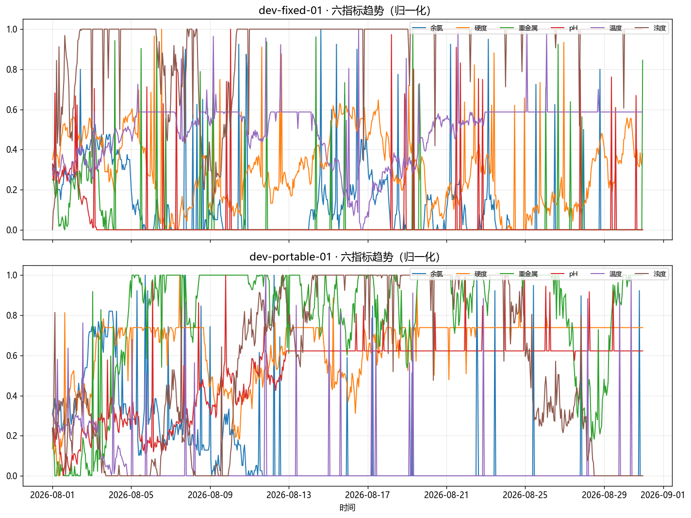
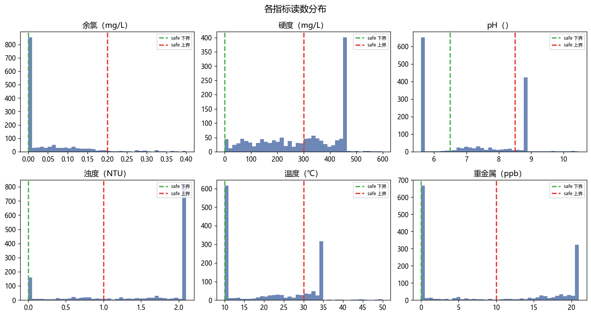
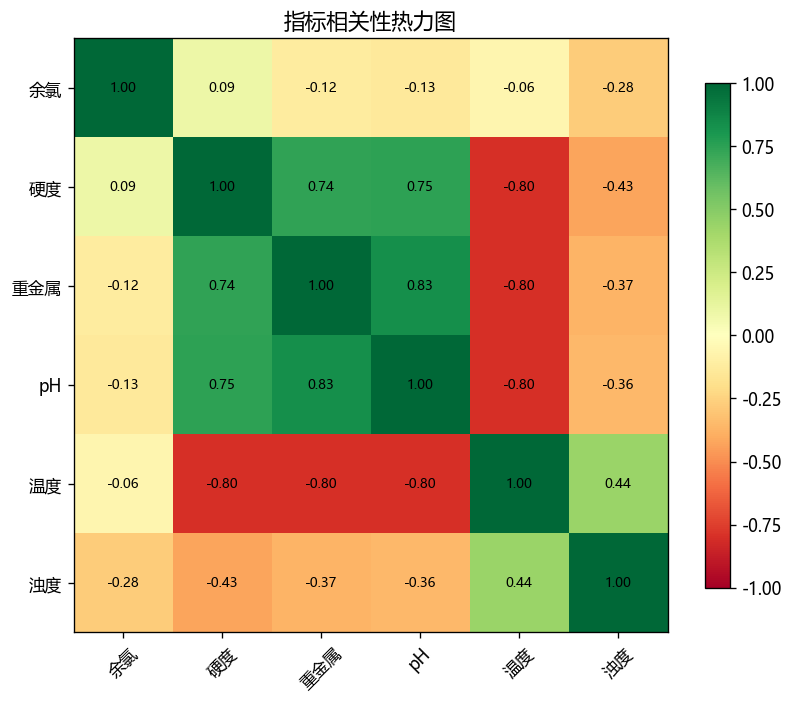
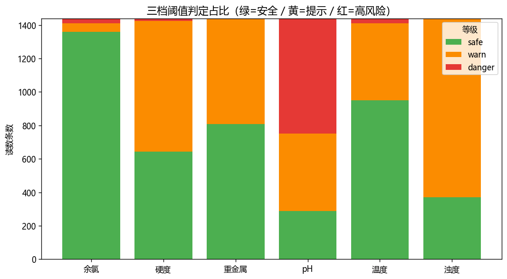
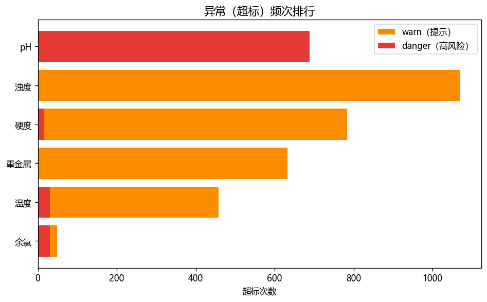

交付物 ⑨ · Python 数据分析Deliverable ⑨ · Python EDA
用 pandas + matplotlib 对水质时序数据做探索性分析，并与产品逻辑（三档阈值引擎）打通。 Exploratory analysis of water-quality time-series with pandas + matplotlib, tied to the 3-tier threshold engine.
诚实边界：真实硬件尚未接入，本脚本输入为模拟水质数据（随机游走 + 偶发异常，与软著mockSource.js同源逻辑，参数对齐config.js）。接入真实公开数据集后，替换数据源即可复用整套分析。 Honest boundary: hardware isn't connected yet; input is simulated data (random walk + injected anomalies, same logic asmockSource.js, parameters aligned toconfig.js). Swap in a real dataset and the whole analysis is reusable.
| 分析Analysis | 回答的产品问题Product question |
|---|---|
| 六指标时间趋势Time trends | 水质如何波动？哪些指标长期超标？How does it vary? Which stay over-limit? |
| 各指标分布Distributions | 读数集中区间？偏离国标多远？Where do readings cluster? |
| 指标相关性Correlation | 哪些指标同涨同跌（如余氯↔浊度）？Which move together (chlorine↔turbidity)? |
| 三档阈值占比Tier ratio | 红/黄/绿各占多少？预警压力多大？How much alert pressure? |
| 异常（超标）频次Alert frequency | 哪类预警最频繁？对应哪类设备？Which alerts dominate? |





cd 09-data-analysis python eda_water_quality.py
依赖 pandas、matplotlib、numpy。输出 charts/*.png + water_quality_sim.csv + 控制台统计摘要。Requires pandas, matplotlib, numpy. Outputs charts + CSV + console summary.
三档判定与 alertEngine.js 同源：safe（绿）safeMin ≤ value ≤ safeMax；warn（黄）超出 safe 未超 warn；danger（红）超出 warnMin/warnMax。指标阈值取自 config.js：余氯 0–0.2 / 硬度 0–300 / pH 6.5–8.5 / 浊度 0–1 / 温度 10–30 / 重金属 0–10。Same 3-tier logic as alertEngine.js; thresholds from config.js: chlorine 0–0.2 / hardness 0–300 / pH 6.5–8.5 / turbidity 0–1 / temp 10–30 / heavy metal 0–10.